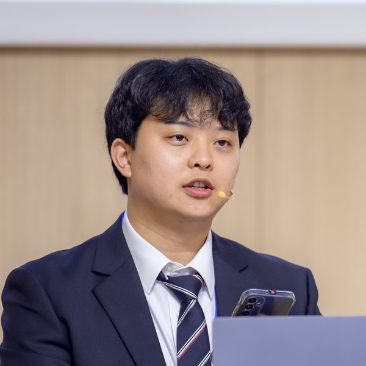
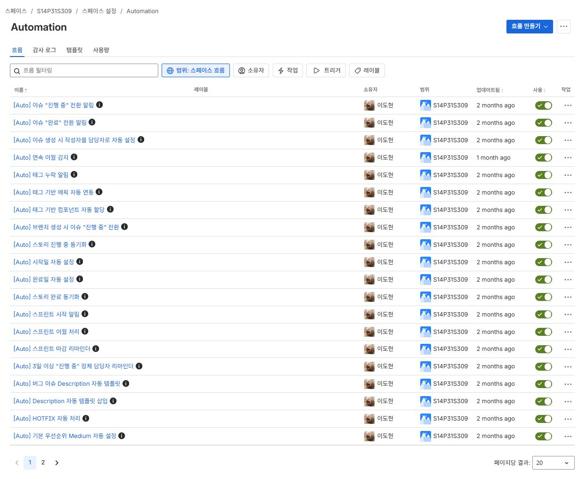
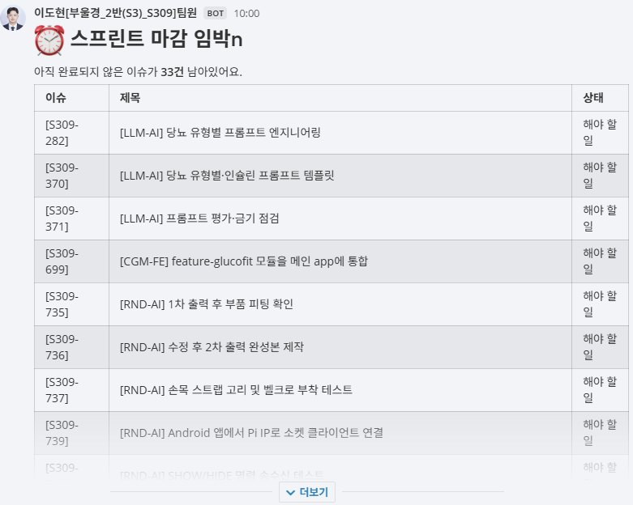

MCP로 AI에 연결해 컨텍스트 자동
수집oh-my-claudecode ·
continuous-claude로 개발 품질
향상[요구사항-파트] · 에픽/컴포넌트 자동 연동 · SP 산정 기준(피보나치)
·jq 등)의
./configure 빌드·C 확장 컴파일 실패uv·PostgreSQL 스택과 마이그레이션을
구성display_name
컬럼을 도입해 사용자 노출 데이터의 일관성을 확보Flyway로 정제 이력을 스키마
버전으로 관리해 재현 가능하게 함[코드-파트] 태그로 에픽·컴포넌트 자동 연동, 누락 시 작성자
알림[HOTFIX] 감지 시 우선순위 Highest + 즉시
알림Spotless(Google
Java Style) · FE ktlint·detekt로 검사·자동 수정 후 자동
re-stage[#131] →
[S14P31S309-131] 자동 변환으로 GitLab–Jira 연동issuetype in (작업,버그)의 한글/영문 매칭 실패를
확인issuetype != Story 부정형으로
변경
